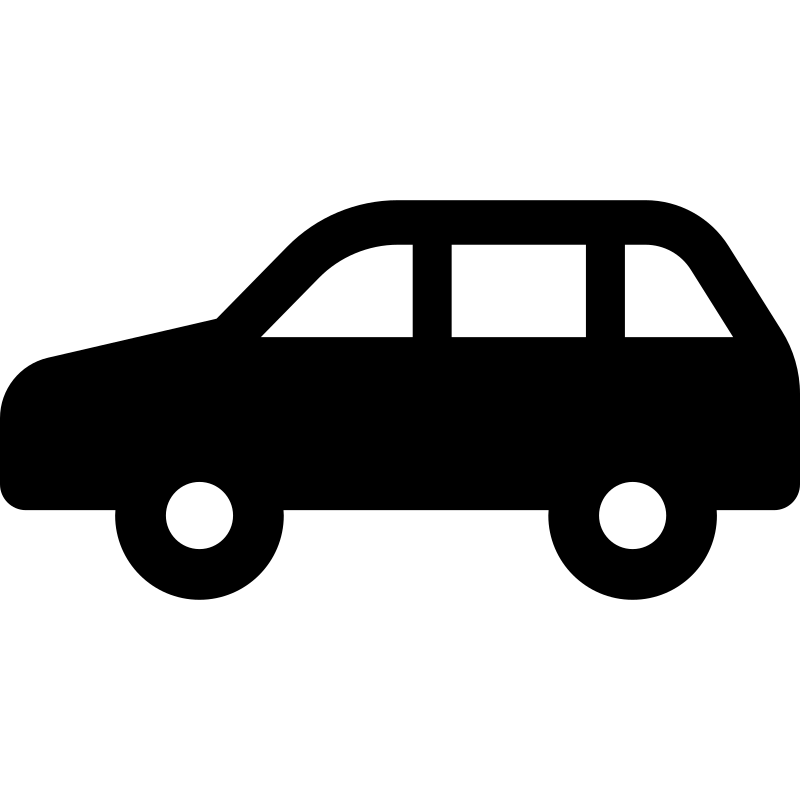
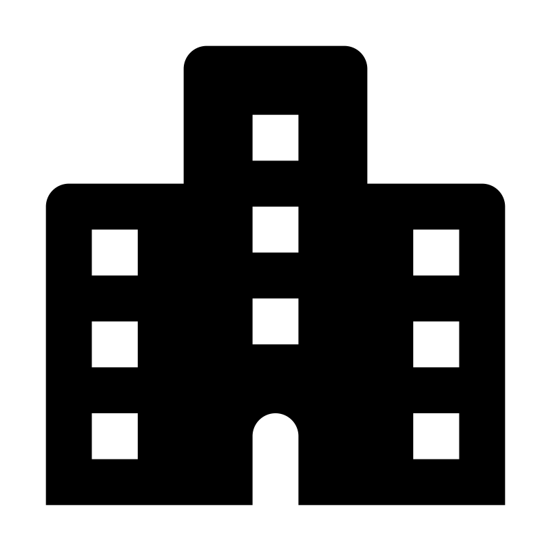
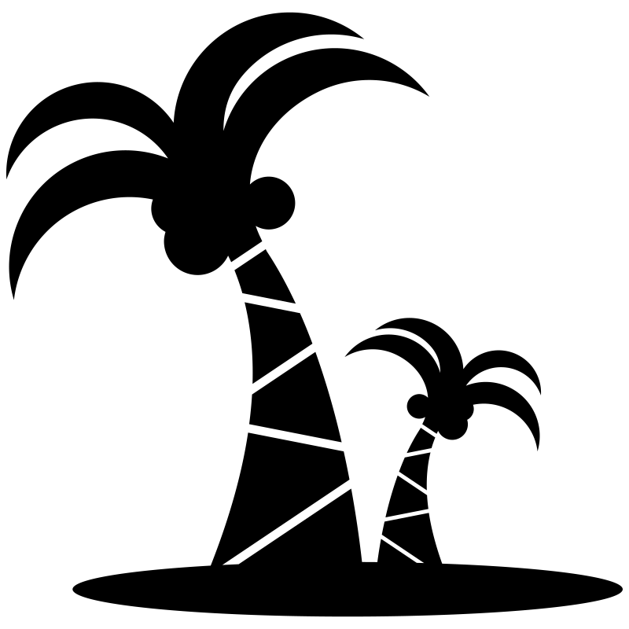
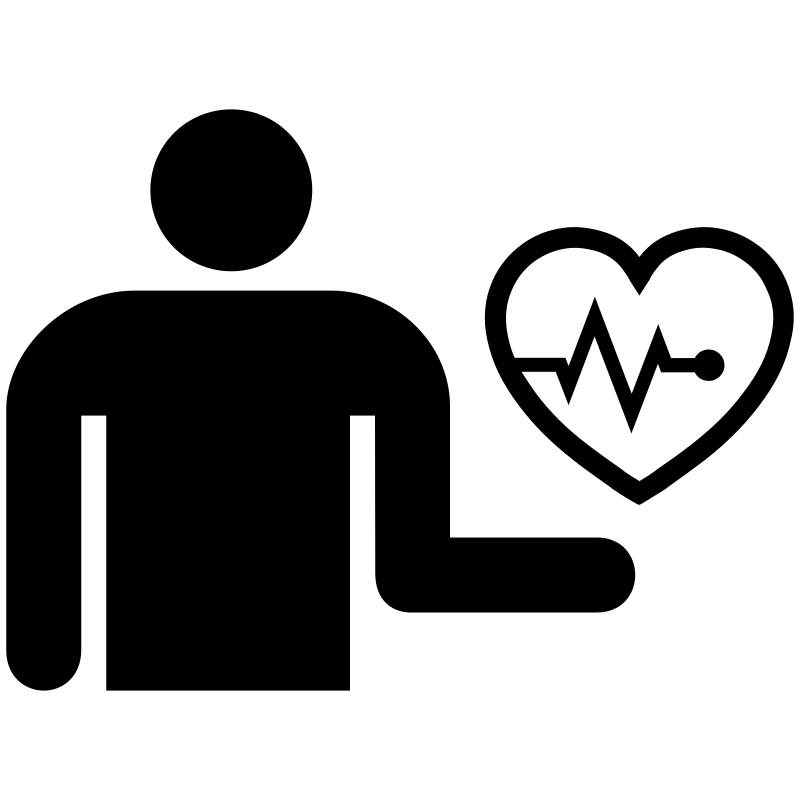

UBEZPIECZENIA MAJĄTKOWE
UBEZPIECZENIA MAJĄTKOWE
ubezpieczenia domów oraz mieszkań
ubezpieczenia domków letniskowych
ubezpieczenia ruchomości domowych
ubezpieczenia stałych elementów
OC w życiu prywatnym
UBEZPIECZENIA KOMUNIKACYJNE
ubezpieczenia OC (również krótkoterminowe)
ubezpieczenia autocasco, minicasco
ubezpieczenia nnw
ubezpieczenia szyb samochodowych
ubezpieczenia asistance
UBEZPIECZENIA DLA FIRM
zapewniające kompleksową ochronę całości majątku oraz działań związanych z prowadzeniem firmy
ubezpieczenia nieruchomości
ubezpieczenia odpowiedzialności cywilnej
UBEZPIECZENIA PODRÓŻNE
ubezpieczenia dla osób pracujących za granicą
wyjazdów zagranicznych indywidualnych i grupowych związanych z uprawianiem sportów oraz wyjazdy rekreacyjne
ubezpieczenia kosztów leczenia za granicą
ubezpieczenia turystyczne
UBEZPIECZENIA NA ŻYCIE
ubezpieczenia na życie z funduszem kapitałowym
ubezpieczenia terminowe, posagowe, inwestycyjne
ubezpieczenia grupowe
indywidualne konta zabezpieczenia emerytalnego
 UBEZPIECZENIA ROLNE
UBEZPIECZENIA ROLNE
obowiązkowe ubezpieczenia budynków rolnych
OC gospodarstwa rolnego
dobrowolne ubezpieczenia dotowane
ubezpieczenia płodów rolnych
ubezpieczenia komunikacyjne (agrocasco)